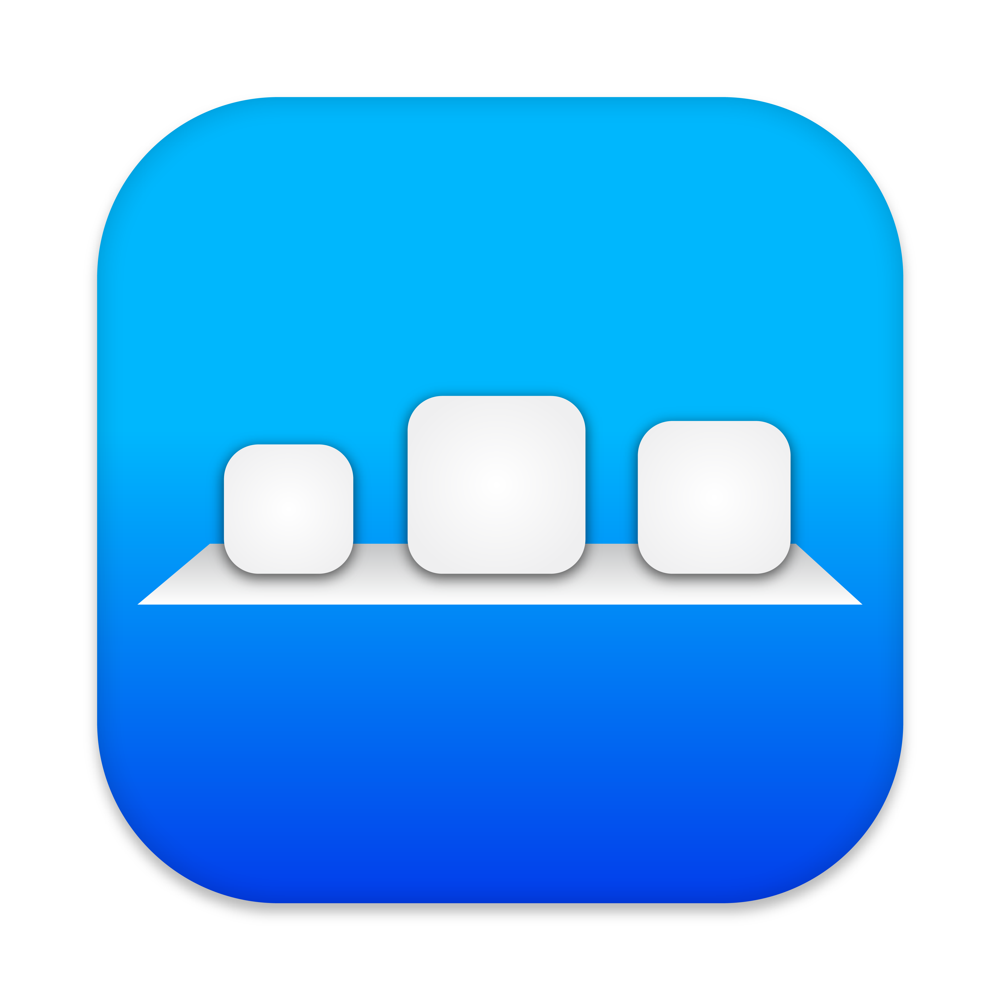
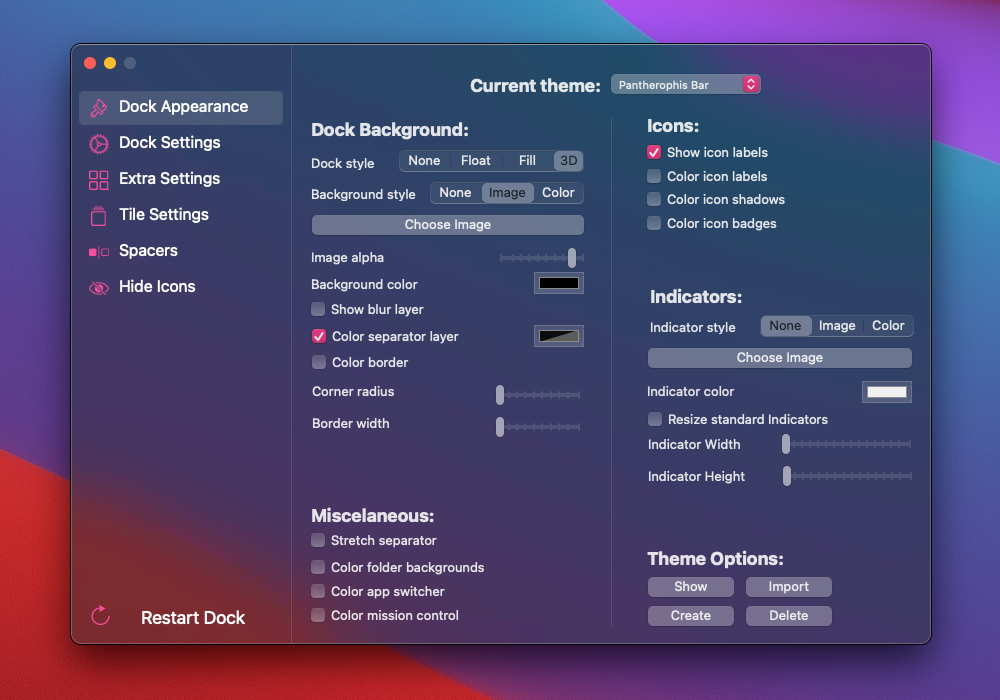

 cDock 4
Dock customization for macOS 10.14 and above.
cDock gives you full control over the Dock. There are tons of ways to customize the look and feel of the Dock. You can even enable some awesome hidden features. cDock is designed to make theming your Dock easy and robust. Give it a go and find what your Docks has been missing!
For downloads of older versions that support lower macOS check out the change-log below.

Features
cDock has all the awesome features below and much more...
Themes
- Awesome pre-installed themes
- Create and share your own themes
Customize
- Customize every detail of your Dock
- Control existing Dock functionality
Hide Apps
- Hide apps from showing in the Dock for privacy or just a clean look
Apple Inspired
- Simple to use Interface
- Includes themes that bring back classic Apple Dock styles
Fast and Lightweigth
- Extends on to the existing Dock functionality so things stay fast and battery life is unaffected
Launchpad & Mission Control
- Add customizations and ease of use features to Launchpad and Mission Control
Color
- Add fun filters to the Dock to make it distinct.
Modern
- Supports the latest macOS versions including Big Sur
- Download the Latest release of cDock
- Open the downloaded
.zipfile and open cDock - Allow cDock to move itself to
/Applications - Allow cDock to install or update it's System Components
- Disable System Integrity Protection
- You can maintain partial protection using
csrutil enable --without debug –without fs - Theme away
- Important compatability notes
- Versions 3.0.7 and above require System Integrity Protection remain off in order to function
- Versions 3.1.2 and above
require macOS 10.14or greater - Versions 4.1.0 and above is required for
macOS 11.0or greater
- cDock has a 7 day free trial
- Licenses are 3 uses each, 1 use per computer
- Refunds are through Paddle
- Read Apples System Integrity Protection article support.apple.com/HT204899
- New Support for macOS Big Sur
- New GUI Redesign
- New Button to disable/enable theming
- New Option to apply a color filter to all icons
- New Option to blur icon reflections
- New Option to bounce icons on mouseover
- New Option to toggle dimming on mouseover
- New Option to brighten dimmed icons on mouseover 182
- New Option to remove separator layers
- New Option to allow Finder and Trash to be moved 86
- New Option to dim minimized windows 85
- New Option to click icons to toggle hiding 121
- New Option to toggle showing recent applications
- New macOS Big Sur style Dock for older macOS versions
- Improved Separated some options from theme settings
- Improved Allows partial enable of SIP
- Improved Injection helper
- Fixed Dock crash loop on macOS 10.13 and lower
- Fixed Recents separator layer being hidden
- Fixed Recents separator layer not tilting when Dock was 3D styled
- Fixed Trash tile not showing badge after Dock restart
- Fixed Greatly reduced crashes when switching / editing themes
- Removed Removed depreciated recents-tile option
- Bug Fixes
4.1.0
- Fixed Crash related to showing mission control
- Fixed Crash when switching between themes
- Fixed Crash when closing dock folder views
- Fixed Continuity leaving behind reflection layer
- Fixed Reflection layer flashing when mousing over with magnification enabled
- Fixed Dock re-enabling process indicators
- Fixed Some cases of failing to load
- Fixed Failing to hide applications
- Fixed Helper crashing
- Improved Updated helper to use XPC
3.1.2
- New Option to hide background of Continuity Dock
- Fixed Label color on Catalina
- Fixed Folder background coloring on Catalina
- Fixed Bugs and added performance improvements
3.0.9
- New Application is now notarized for Catalina
- Fixed Bugs and added performance improvements
3.0.8
- New Catalina support
- New SIP warning sheet
- New Delta updates
- New Application design
- New Activations now work for all users of the same computer
- Fixed Crash if blacklisted item no longer exists
- Fixed Mission control automatically showing desktop previews
- Fixed Payment window not attached to main window
- Fixed Start at login issues
- Fixed Mission control automatically showing desktop previews
- Fixed Bugs and added performance improvements
- Improved Mojave support
- Improved Switched from SIMBL to Mach Inject for loading into Dock process
- Improved Switched back to Sparkle framework for updates
- Improved Updated version number to 3.x.x to match current branding
- Removed DevMate framework (product was discontinued)
3.0.7
- New Beta updates preference
- New Beta updates will be always enabled on beta versions of MacOS
- New Added some retina themes (thanks to https://github.com/Wandmalfarbe)
- New Better application hiding view
- New Purchases Tab
- Fixed App repeatedly restarting when looking for an existing license
- Fixed Using newer Paddle and Devmate frameworks
- Fixed Fixes purchase and feedback windows in dark mode on Mojave
1.2.0
- New Send recovery email in preferences tab
- New Option to force Dark menus in the Dock
- New cDock registers for all accounts on the computer
- Fixed Mojave crashes on Beta 6 and up
- Fixed Mojave separator layers not pinning
- Fixed Mojave recents separator layer uses separator layer settings
- Fixed Several crashes relating to icon reflections
- Fixed Mission Control desktop labels showing the wrong color
1.1.3
- Fixed cDock not opening on non-admin account
- Fixed Document folders reflections not updating
1.1.2
- New Hide any application from the Dock
- New Flex spacer tiles
- New Activate/Deactivate license button
- Fixed Hot corners failing to open Mission control
- Fixed Handoff icon badge displaying text instead of icon
- Fixed Dock size shrinking to minimum when changing Dock position
- Fixed Font related crasht
- Fixed Fix error when scrolling on System Integrity Protection video
- Improved Hiding Finder and Trash are now separate from theming
- Improved Mission control auto-show and Launchpad dots are now separate from theming
- Improved Trash can badge option is now separate from theming
- Improved Updated to latest Paddle and Dev-Mate
1.1.1
- Fixed cDock Helper crash on launch
- Improved Automatically expanding spaces when entering Mission Control to be instant
1.0.4
- New Show/Hide iCloud Drive icon in Dock
- New Show/Hide AirDrop icon in Dock
- New Show/Hide Launchpad new item dot
- New Launchpad adjust row and column count
- New Ability to delete saved Dock backups
- New Button to show license
- Fixed Dock preference backups not showing in some cases
- Fixed Indicator miss-alignment on Left / Right positioning
- Fixed Conflict with TotalSpaces
- Fixed Case where app could hang when communicating with the Dock
- Fixed Case where Dock would freeze when restarting and loading the cDock bundle
- Fixed Case where helper could crash when trying to load the cDock bundle
- Fixed cDock Helper not using app icon
- Fixed cDock Helper not checking for updates
- Fixed Unhandled exception when trying to use non RGBA color picker
- Fixed Issue where switching themes back and forth would decrease slider values
- Fixed Issue where Left / Right position dock would draw custom indicator images incorrectly
- Fixed Show Finder and Show trash default to on if the key does not exist in the theme
- Improved Updated PaddleFramework to latest version
1.0.3
- New Extended trial to 2 weeks
- Fixed Corrected a few typos
- Fixed Update a few instances of linking to http:// > https://
- Fixed Revert StartAtLoginController change
- Fixed Fix system component update failing
1.0.2
- New Pinning the dock to an edge of the screen
- New Hide Finder tile
- New Hide Trash tile
- New Show item count badge on Trash tile
- New Color icon badges background
- New Color Mission Control background
- New Control some default Dock settings without restarting the Dock
- New More options for showing icon reflections
- New Dim inactive icons
- New Small spacer tiles
- New Add or Remove themes without restarting cDock
- New Automatically expand spaces when entering Mission Control
- New New themes
- New New Icon
- New Crash protection (in case a macOS update causes repeated Dock crashing)
- Fixed Dock crash when switching between some themes
- Fixed 3D option not working in some cases
- Fixed Issue with Vertical Full screen dock and magnification enabled
- Fixed Label background not fully applying on folder views
- Fixed Lots of changes to theme not applying until Dock restart
- Fixed Better Dock reloading
- Fixed Better Dock layering (Badge > Icon > Indicator > Reflection)
- Fixed Issues with reduced transparency enabled
- Fixed Helper Application is now CodeSigned
- Improved Badges and label text will change to be readable based on background color
- Improved Ability to select pictures for background and indicator (.png format)
- Improved More tooltips
- Improved Better theme management
- Improved Updated SIMBLManger
- Improved Dev-Mate for updates, bug reporting, feedback, and logging
- Improved Paddle for sales and logging
- Improved Changes to theme preferences structure (old themes will need to be updated)
- Improved User Interface redesign
- Improved Updated PFMoveApplication
- Removed Fishhook framework
1.0.1